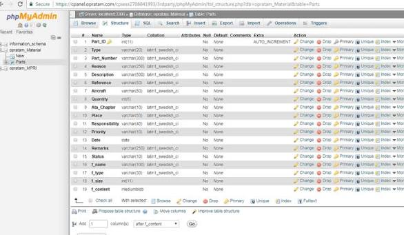

Basis Data
Sistem Manajemen Database
Perancangan skema relasional, normalisasi tabel, serta pengelolaan kueri data terstruktur untuk memastikan penyimpanan informasi yang rapi, cepat diakses, dan minim duplikasi.
Relasi Tabel
SQL Query
Struktur Data